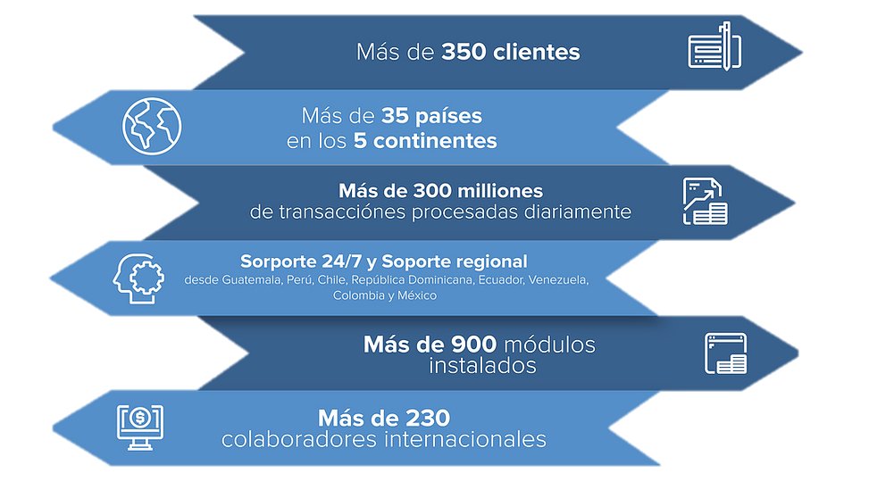

PLUS TI es una firma de desarrollo de software líder en soluciones para la prevención de crímenes financieros y optimización de procesos institucionales, con una larga trayectoria en la industria y un compromiso con un mundo financiero más seguro.
El portafolio Monitor Plus® se basa en productos flexibles para el monitoreo en tiempo real de operaciones financieras y no financieras que combina avanzadas tecnologías de inteligencia artificial (incluyendo machine learning) con conocimiento experto para un análisis y defensa integral de baja fricción con el cliente.
Nuestra línea de productos provee cobertura en:
⚪ Prevención y Control de Fraude
⚪ Cumplimiento
⚪ GRC - Gestión de Riesgos y Oportunidades
⚪ Auditoría
⚪ Negocios
⚪Comercio Internacional
Monitor Plus® 4.2.4 está certificado PCI PA-DSS 3.2, es usado por 68% de los mejores bancos hispanohablantes de Latinoamérica (según Ranking 2017 de América Economía), y ha recibido múltiples menciones por Gartner®. Además, PLUS TI ha sido mencionado por la revista CIOReview como uno de los Proveedores de Soluciones de Tecnología para la Banca Más Prometedores de 2018.